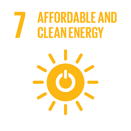

Pada tahun 2015, Majelis Umum PBB mengadopsi Agenda Pembangunan Berkelanjutan 2030, yang mencakup SDG 7 untuk memastikan akses energi yang terjangkau, andal, berkelanjutan, dan modern bagi semua. Energi merupakan elemen krusial dalam mencapai pembangunan berkelanjutan dan penanganan perubahan iklim melalui Perjanjian Paris, yang berfokus pada pengurangan emisi gas rumah kaca dengan beralih ke energi bersih. SDG 7 juga membuka peluang ekonomi, pemberdayaan masyarakat, pendidikan, kesehatan, dan ketahanan iklim yang lebih baik. Untuk mendukung pencapaian SDG 7, DESA (Departemen Urusan Ekonomi dan Sosial PBB) menyediakan layanan sekretariat antar pemerintah, analisis kebijakan, serta peningkatan kapasitas. DESA juga berperan sebagai Sekretariat UN-Energy, membentuk Kelompok Penasihat Teknis SDG 7 dan memfasilitasi Energy Compacts yang melibatkan sektor publik dan swasta untuk mempercepat aksi di sektor energi. Melalui kerjasama ini, DESA berperan penting untuk mendorong transisi global menuju sistem energi yang lebih berkelanjutan dan inklusif.
Peran Indonesia dalam kerjasama energi bersih dan terjangkau sangat penting dalam mendukung pencapaian SDG 7. indonesia telah mengambil berbagai langkah strategis untuk mempercepat transisi energi ke sumber yang lebih bersih dan ramah lingkungan. Dengan berkomitmen untuk mengurangi ketergantungan pada energi fosil dan meningkatkan penggunaan energi terbarukan, seperti tenaga surya, angin, dan hidro. Indonesia juga aktif dalam forum internasional seperti Perjanjian Paris untuk mengurangi emisi gas rumah kaca dan berpartisipasi dalam kemitraan energi bersih dengan negara - negara maju serta lembaga internasional. Pemerintah juga meluncurkan program untuk memperluas akses energi di daerah terpencil dan mendorong efisiensi energi, dengan melibatkan sektor swasta dan masyarakat. Melalui kerjasama ini Indonesia berperan aktif dalam transisi energi global yang berkelanjutan.